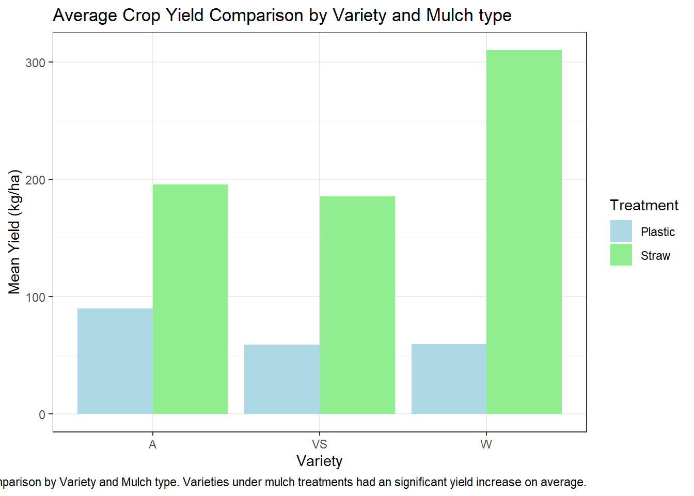
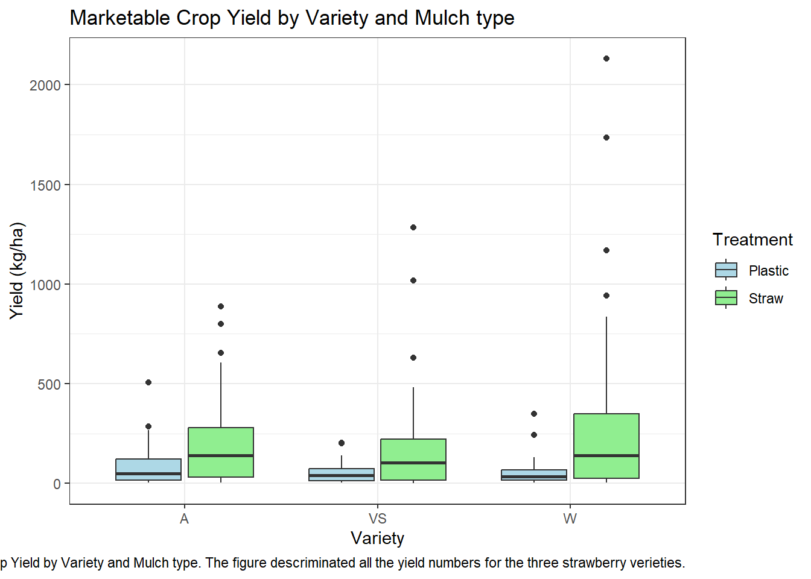
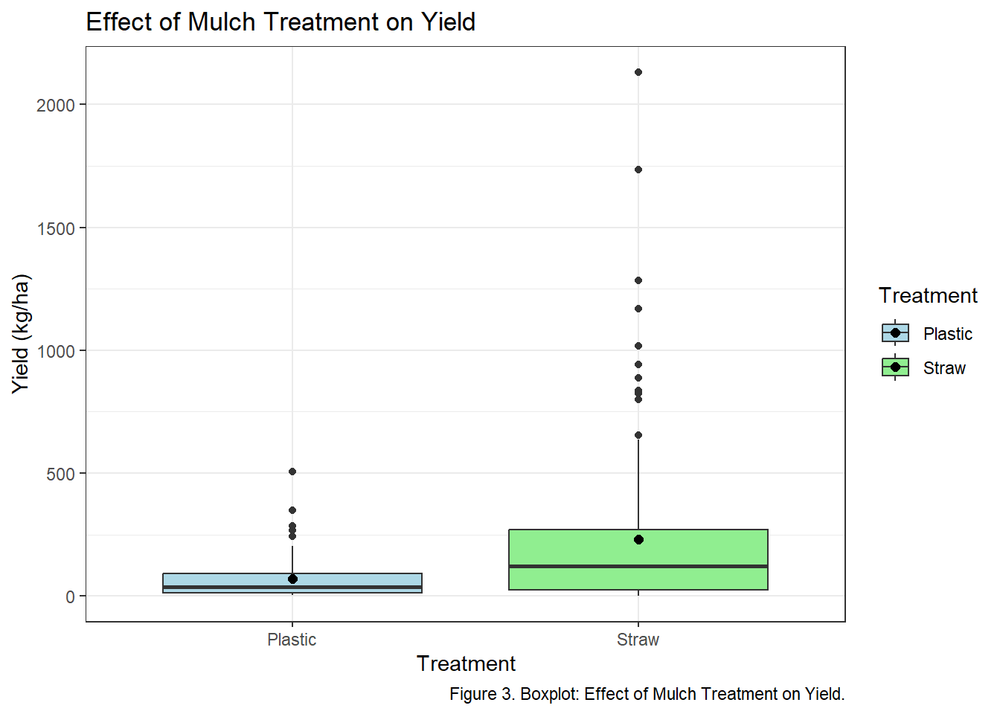
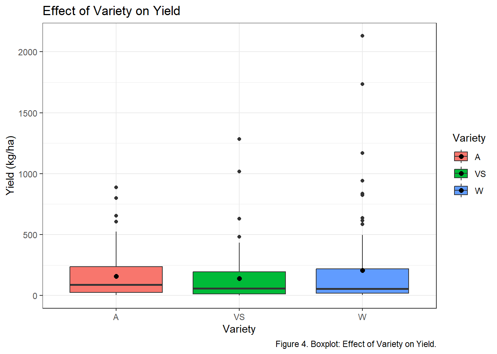

| Variety | Treatment | Mean_Yield |
|---|---|---|
| A | Plastic | 89.95714 |
| A | Straw | 195.71961 |
| VS | Plastic | 58.92000 |
| VS | Straw | 185.54884 |
| W | Plastic | 59.15161 |
| W | Straw | 310.21556 |
| title: “Final_Project_BIOL” author: “Kevin Fantinatti” format: pdf: |
Introduction
In the pursuit of sustainable strawberry cultivation, the practice of mulching plays a pivotal role in determining both yield and plant health. Traditional methods often involve the use of black plastic mulch, which effectively suppresses weeds but restricts the natural growth of strawberry plants, preventing them from sending out runners.
As a result, many growers replant after a few years to maintain optimal production levels. However, some growers opt to extend the life of their existing plantings under plastic for an additional season, driven by the significant costs associated with establishing new crops. This raises an important question: would transitioning from plastic mulch to straw mulch — often referred to as “renovation” — benefit these growers by enhancing yield?
This study aims to explore this question by examining the impact of such a transition on three different varieties of strawberries, providing valuable insights for growers in the Northeast looking to optimize their practices and ensure the sustainability of their operations.
The hypothesis is that strawberry varieties under straw mulch treatment will produce better results than plastic treatment because the plants can root runners into the soil without being obstructed by black plastic. We believe this natural rooting process will enhance the overall growth and yield of the plants.
Material and Methods
Treatments
This study evaluated three varieties of crops, all of which were scheduled for harvest in June. The varieties included Wendy (W), which was noted for its early production; Allstar (A), which had a mid-range harvest time; and Valley Sunset (VS), the latest of the three varieties.
Mulch Treatments
Two distinct mulch treatments were applied to the plots. The “Plastic” treatment involved plots that had previously been covered with plastic mulch, which was left in place for the duration of the study. The “Straw” treatment, on the other hand, consisted of plots that had originally been covered with plastic mulch, but this plastic was removed and replaced with straw mulch.
Data Collection and Analysis
Data was collected on the harvest date for each plot to track the timing of production across the different varieties. Lastly, the row layout of the experimental design was considered a potential blocking variable, although the particulars of this design were not fully defined, as it was overlaid on a previous experiment. Statistical models and data cleaning were performed using R software.
Results
The first results of the study are presented in Table 1, which summarizes the mean yield of strawberries across different varieties and mulch treatments. The mean yields observed for each treatment are as follows:
- For Variety Allstar(A), the yields were 89.95714 kg/ha with Plastic and 195.71961 kg/ha with Straw mulch.
- For Variety Valley Sunset(VS), the yields were 58.92000 kg/ha with Plastic and 185.54884 kg/ha with Straw mulch.
- For Variety Wendy(w), the yields were 59.15161 kg/ha with Plastic and 310.21556 kg/ha with Straw mulch.
These results indicate that the type of mulch treatment had a significant impact on the overall yield of strawberries, as demonstrated in Figures 1 and 2.


Furthermore, a two-way ANOVA was conducted to evaluate the effects of crop variety and mulch treatment on yield (Table 2). The results showed that mulch treatment had a significant effect on yield (F = 20.36, p < 0.001), with Plastic mulch outperforming Straw mulch. Crop variety did not significantly affect yield (F = 1.35, p = 0.261), and there was no significant interaction between variety and mulch treatment (F = 1.63, p = 0.198). These results suggest that mulch treatment is a key factor influencing yield, regardless of the crop variety.
| Term | DF | F_Statistic | P_Value |
|---|---|---|---|
| Variety | 2 | 1.353437 | 0.2605227 |
| Treatment | 1 | 20.360218 | 0.0000105 |
| Variety:Treatment | 2 | 1.629185 | 0.1984784 |
| Residuals | 217 | NA | NA |

As shown in Figure 4, no significant differences were observed in yield among the various strawberry varieties when subjected to the same mulch treatment. This suggests that the choice of mulch plays a critical role in yield performance, while the variety itself does not significantly affect the yield under the tested conditions in order to test if strawberry varieties developed different when under different treatment a ANOVA statistical model were made.

| Term | DF | F_Statistic | P_Value |
|---|---|---|---|
| Variety | 2 | 1.237461 | 0.2921311 |
| Residuals | 220 | NA | NA |
The ANOVA statistical analysis presented on table 3, confirmed that there are no difference between varieties yield production, this represents that all varieties have the similar performances when are under the same conditions. The overall production yield for Allstar (A), Valley Sunset (VS) and Wendy (W) suggests that are no differences of marketable yield among the varieties.
Discussion
The analysis conducted in this study identified that the type of mulch treatment (Plastic or Straw) significantly affects the strawberry crop yield. The Allstar (A), Valley Sunset (VS), and Wendy (W) performed, respectively, 117.57%, 214.92%, and 424.44% better under straw mulch treatment than using plastics. This finding emphasizes the critical role that straw mulch choice plays in strawberry cultivation.
Additionally, the investigation revealed that there were no significant differences in yield among the three varieties of strawberries assessed. The Wendy (W) variety performed with a higher yield than others under straw mulch. However, the ANOVA statistical analysis showed that there were no significant effects of interaction between mulch treatment and variety. This means that the influence of mulch treatment on yield remains consistent across all varieties, indicating that there is no specific combination of variety and mulch treatment that provides a unique advantage in terms of yield performance.
Conclusion
This study aimed to assess the impact of transitioning from plastic to straw mulch on the yield of three strawberry varieties, namely Wendy, Allstar, and Valley Sunset. Our findings confirmed the hypothesis that strawberry varieties would perform better under straw mulch treatment. This provide valuable insights for strawberry growers in the Northeast who are considering innovative approaches to enhance production sustainability.
The results indicate that removing plastic and replacing it with straw mulch can have a positive effect on yield. This is likely due to the enhanced root development afforded by the absence of the plastic barrier, allowing the plants to send out runners and establish a more robust root system. Our hypothesis that Straw plots would yield better than Plastic plots was supported by the data collected and statistical analysis, demonstrating the advantages of this technique.
In conclusion, the transition to straw mulch represents a promising strategy for growers who wish to maximize the longevity and productivity of their strawberry crops. By adopting this practice, producers can capitalize on enhanced yields and healthier plants, ultimately leading to more sustainable strawberry cultivation in the region. As farmers continue to seek methods that balance economic viability with environmental stewardship, this study underscores the potential benefits of exploring alternative mulching practices. Further research is recommended to explore the long-term effects of straw mulch on soil health and additional crop varieties, ensuring that strawberry growers can make informed decisions for their operations.